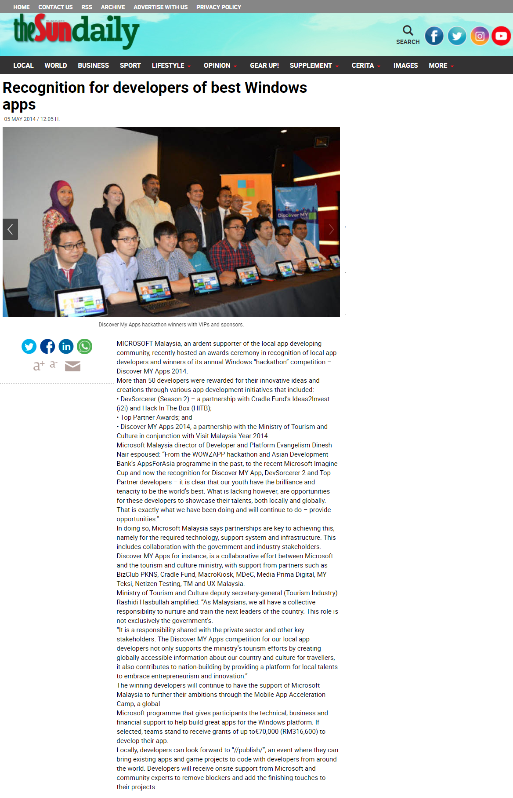

Intelligent travel itinerary planner capable of suggesting nearby attractions to help anyone explore the world — built for Windows 8 at Microsoft's Discover MY Apps hackathon.
Screenshots
Features
Recognition
LOOK! won the Ministry of Tourism and Culture (MoTaC) category at Microsoft's Discover MY Apps 2014 hackathon in Malaysia, and was shortlisted as a nominee for the finals of MSC Malaysia APICTA Awards 2014 in the Best Tourism & Hospitality category.

Technical